Before you begin this tutorial, you might want to familiarize yourself with some basic concepts relative to the MOE GUI (Graphical User Interface). To find information on a specific panel, use the Index of MOE panels.
Note: If MOE does not correspond to what is presented in this tutorial, you might be running a customized version. Try using "standard" MOE. Restart MOE, this time with the -std command line switch (i.e. moe -std).
This tutorial includes the following exercises:
| MOE | MOE Window |
| SE | Sequence Editor |
| DBV | Database Viewer |
| CLI | Command Line Interface |
| MOE | RHS | Right Hand Side Button Bar (MOE Window) |
| MOE | Footer | Footer Area (MOE Window) |
This tutorial assumes that you are using a three-button mouse. For information on using a two-button mouse see Using the Mouse.
When first started, MOE always displays its main window, the MOE Window, in which molecular systems are rendered and manipulated.
Small molecules can be built using the Molecule Builder. In this exercise, we will build a molecule of aspirin, as pictured below:
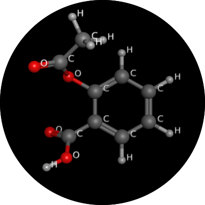
Open the Molecule Builder:
Create an aromatic ring by pressing the benzene button, located on the right of the Molecule Builder.
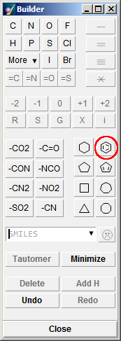
Center the molecular system in the MOE Window by clicking
Render the molecule as cylinders by clicking on the appropriate button in:
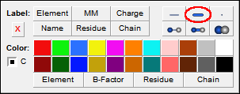
Choose to label all atoms by element.
To add a carboxyl group, select one of the benzene hydrogens by clicking the left mouse button on it. Substitute it with a carboxyl group by clicking on -CO2 in the Builder.
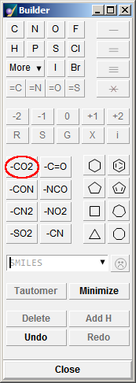
To add a hydroxyl group, select the hydrogen atom ortho to the carboxyl group. In the Builder, click on O in the Element buttons.
To acetylate the hydroxyl group, select the hydroxyl hydrogen atom in the MOE Window and click on the -C=O substituent button in the Builder, followed by the C element button. You have now completed the aspirin molecule.
We could also have built the aspirin molecule by typing:
O(C(=O)C)c1c(C(=O)O)cccc1
in the SMILES String text field of the Molecule Builder
and then pressing the SMILES button (the smiley face).
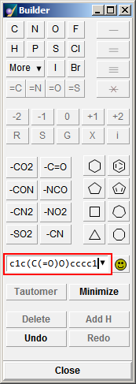
Press the Center button to center the molecular system in the MOE Window:
Rotate the molecule by dragging the middle mouse button in the MOE Window. You can also rotate the molecule using the trackball in the RHS.
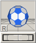
When rotating the molecule in the window, the center of rotation is the center of mass of the entire molecular system. When zoomed in close to an atom, however, you may prefer to localize movement by forcing rotation about the atom. To do so, place the mouse cursor over the atom and click the middle button. To regain the default setting, simply click the middle mouse button in the MOE Window away from any atoms.
To pan the molecule, press Shift and drag the middle mouse button. To pan the molecule with the trackball (), activate panning mode by clicking in the gray square at the bottom left of the trackball (the square is labeled "R" when in rotation mode and "T" when in translation mode).
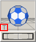
To zoom in or out, press Ctrl and drag the middle mouse button. Alternatively, if your mouse is equipped with a scroll wheel, it can also be used to control zooming. Another alternative is using the wheel below the trackball.
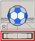
The current forcefield setting is shown on the left of the MOE Footer:
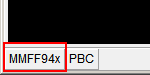
To change the forcefield, click the button showing the forcefield name, or use .
In the Potential Setup panel, ensure the MMFF94x forcefield is active by selecting it in the Load... pulldown menu. Close the panel.
Compute partial charges by choosing:
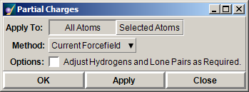
Leave the Method as Current Forcefield and press OK. This uses the default charge calculation associated with the current forcefield.
Minimize the energy of the molecular system by choosing the Minimize button in the Right Button Bar of the MOE Window.
See the tutorial on MOE builders for more information on the Molecule Builder.
Save the acetylsalicylic acid molecule you have just built:
Double-click on the directory in which to save the molecule file. Next, enter aspirin in the text field and save with a .moe extension (the MOE file extension) by clicking Save.
Tip For quick access to MOE directories, click on the arrow in the text field. This opens the shortcut list of recent directory paths.
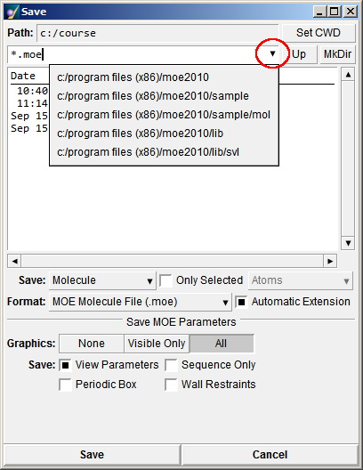
Now, you will load the newly saved molecule back into MOE. However, before doing so, you must first clear the data currently in MOE:
or
Load the molecule back into MOE:
In the Open panel, select aspirin.moe from the list of files and press OK.
If after loading the molecule file no atoms are shown in the MOE window, it may be that the molecule is not visible with the current viewing parameters. To change the view so that the molecule is fully visible, choose .
When building molecules in MOE, it is convenient to save and retrieve molecular fragments to and from a database. Below is a short example on how to create a database and copy the aspirin molecule from MOE to the database.
To create a molecular database, choose:
MOE | File | New | Database
In the New Database panel, select the directory in which the new database will be saved.
In the Path text field, enter aspirin.mdb.
Press OK. The new database appears in a MOE Database Viewer. The database contains a single field called mol, which is of type molecule.
Create a second field in the database, which will contain the molecule names, by selecting:
The command line in the Database Viewer changes to a prompt. Choose char in the Type option menu to create a textual field. Next, enter Molecule Name in the Name text box and press Return. A new field called Molecule Name is created in the database.
To copy the aspirin molecule from the current system to the database, choose:
In the Add Entry panel, select Mode: System and type aspirin in the Molecule Name text field. Press OK. Both fields now contain information in the database.
In the Database Viewer, to get a better view of the molecule in the database, position the cursor over the cell in the first field (called mol), press the left mouse button and drag down (and slightly to the right) until you clearly see the molecular drawing. You can rotate the drawing by dragging the middle mouse button over it.
Only the heavy atoms are displayed in the Database Viewer. To display hydrogen atoms, choose:
The Render menu allows you to change the visual display mode of the current molecule. The primary rendering controls are found in , which can also be opened using .
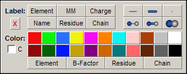
The default rendering mode is Line mode, which is also the fastest drawing mode. In building the aspirin molecule, you previously used the Render menu to change to Stick mode. Three other modes are: Ball and Line, Ball and Stick, and Space Filling. There is even a None (no bonds) mode. Take a moment now to try each rendering mode.
Note that if you have any selected atoms, the chosen rendering will affect only those atoms. The following steps will show you how to render different parts of a system in distinct modes:
To set the entire molecule in Stick mode, make sure no atoms are selected and use .
To select all the benzene carbons, open the Atom Selector with . In the SMILES text field, type a to indicate aromatic atoms and press All. This will perform a substructure search and select all atoms within the matching strings.
Choose the appropriate button in to display the atom nuclei of only the ring carbons as small spheres.
The rendering options allow atoms to be labeled and colored according to charge and element type. You may wish to take a moment now to experiment with the various Label and Color buttons in the panel.
Individually selected atoms, hydrogens, residues and sidechains may be shown or hidden using the and submenus. The Backbone, Sidechain and All options are useful when studying proteins and polymers. You will have an opportunity to experiment with these commands later when we create a protein. For now, hide the hydrogens on the aspirin molecule with . To make the atoms visible again, use . Hydrogen atom display can also be toggled using the button; clicking this cycles through displaying all, polar only, or no hydrogen atoms.
The Render menu is also used for setting the viewpoint from which the molecule is observed. is equivalent to . These operate on selected atoms or on all atoms if none are selected, and adjust the view so that all atoms in question can be seen and are centered in the Main Window. The View can also be set using the menu, which allows the user to save and load particular viewing angles.
To demonstrate the use of on selected atoms, we begin by selecting a few atoms in the aspirin molecule:
Select all oxygen atoms with . Open the Periodic Table and choose O.
Select . In the MOE window, the view is now zoomed in on the part of the molecule containing the selected atoms.
To change the properties of a molecule or manipulate a subset of its atoms, you must first indicate which atoms are to be manipulated by creating an atom selection set. Selected atoms are identified by a change in color and a (small) sphere depending on the current rendering mode of the atom selected.
Use the mouse to manually select atoms:
Make a selection set consisting of a single atom by clicking the left mouse button on any atom. This will cause all other selected atoms to become unselected.
Select the atoms that form a bond by clicking on the bond that links them.
Select all atoms of a residue by pressing Ctrl while clicking the left mouse button on an atom. In the case of the aspirin molecule, all atoms belong to the same residue, hence, all atoms are selected. Hidden atoms are also selected.
Add a single atom to the selection set by pressing Shift while clicking the left mouse button on an atom. This toggles the atom selection state. You can add all atoms of a residue to the selection set by holding down both Shift and Ctrl when clicking the left mouse button. You cannot, however, click on hidden atoms.
Draw a selection box around a group of atoms by dragging the left mouse button over the atoms you want to select. A selection box is drawn as you drag the mouse. When you release the left mouse button, all atoms within the box become selected. To add more atoms to the selection set, drag a new box while pressing Shift.
The Selection menu allows you to add atoms to the atom selection set according to element type and geometry (hybridization). In addition, atoms can be selected based on whether they belong to the molecule backbone or to a side chain and whether they have been hidden (e.g. using ) or fixed (e.g. using ). The submenu allows you to extend the atom selection set from the currently selected atoms.
To remove atoms from the atom selection set, press Shift and click on the atoms you wish to deselect.
Selected atoms can be moved independently of the rest of the molecule by dragging the middle mouse button while holding down the Alt key, with or without the Shift key. Pressing both the Alt and Shift keys specifies that selected atoms are to be moved; if only the Alt key is depressed, the selected atoms are rotated about their center of mass. The can also be used to manipulate the selected atoms by pressing Alt while using the trackball.
Clear the selection set by clicking in the MOE Window away from any atoms.
Select the two atoms that form a bond by clicking on the bond that links them.
The MOE Footer changes to show the current bond length, plus a dial, compass button and Profile. Left click and drag on the dial to rotate the bond. As you do this you will see that one of the bond atoms is highlighted with a compass; this shows which end of the bond will rotate. To reverse this, click on the compass button. (If this button is not clickable, check to see if any atoms in the molecule are fixed.)

To see a plot of potential energy of the molecule vs dihedral angle of the selected bond, click on the Profile button. This plot is interactive; left click in it to set the bond to that dihedral angle. To see the value of the dihedral angle in the Footer rather than the bond length, select the four atoms that fully define the dihedral angle.
An alternative method for rotating about a bond used in previous versions of MOE will still work:
Clear the selection set by clicking in the MOE Window away from any atoms.
Select a single atom with the left mouse button.
Select a second atom that is bonded to the first by holding down Shift and clicking the left mouse button on the atom. To rotate about a bond, exactly two atoms joined by a bond must be selected.
Press the Alt key and drag the left mouse button.
When rotation is possible, the smaller group will rotate, while the larger group remains still. If no rotation occurs, it may be because the bond is in a ring, or because there are fixed atoms preventing the rotation. Also, if one of the selected atoms has no other atoms bonded to it, no apparent rotation will result.
If the mouse cursor is held over the , a yellow bubble appears reporting the number of atoms currently in the system. If a single atom is selected, the MOE footer changes to show the name or number of the selected atom's chain and residue. The atom name is shown in the text box (and can be edited), while the element is shown to the right in square brackets. By holding the mouse cursor over the displayed text, more information about the atom is shown, while holding the mouse cursor to the right of the text shows information about the number and properties of the selected atoms.

The Atom Manager provides more detailed information about the individual atoms in a molecular system, such as element name, hybridization and charge, as well as information about other molecular objects.
Molecules have a hierarchical composition. Atoms are the children of residues, and residues are the children of chains. The chain-residue relationship is explicitly mapped out in the Sequence Editor. The Atom Manager can be used to modify atom, residue and chain properties.
Double-click on an atom. This opens the Atom Manager which lists all atoms, residues and chains found in the MOE Window, along with their properties. (Another way of opening the Atom Manager is by choosing .)
Select a residue line in the list by clicking the left mouse button on a Residue line. In the edit area at the bottom of the panel, residue properties such as name and type can be edited. You must click Apply to accept any changes.
Select a Chain line in the list to see the chain properties available for editing.
Press the Compress All button. Only the chain listings are displayed.
To uncompress a single chain, double-click the left mouse button on it. Similarly, double-click on a residue line to uncompress it.
Press Expand All to restore the full listing.
Click the left mouse button on an atom line. The properties of this atom are now editable.
Press to open the Atom Selector panel. Select all carbons using the Table pulldown menu in the Element section. In the Atom Manager, turn on the Selection Only checkbox. The list now displays information only for the selected atoms.
Steric measurements can be shown in the main MOE window using . Distances are measured in angstroms, and bond angles and torsions in degrees.
Choose . The CLI in the MOE window becomes a prompt area for measuring distances, and the cursor becomes a crosshair. You are prompted to select the first and second atoms.
Select any two atoms. A colored meter appears, with its distance measured in angstroms. (If meters are not being displayed, check the settings in MOE | Render | Setup checkbox.)
Cancel the meters prompt by pressing the Esc key.
Meters are dynamically updated whenever changes occur in a molecule's conformation. You can verify this by selecting one of the atoms implicated in a meter and moving it (hold down Shift and Alt and drag the middle mouse button).
Meters can be deleted using the options.
Note: If, during prompting, you wish to enter an SVL command, use the SVL Commands window or another CLI in the system (e.g. in the Sequence Editor).
As an alternative to creating a meter, distances, bond angles and dihedrals are shown in the MOE Footer whenever two, three or four appropriately-bonded atoms are selected.
Display the potential energy of the entire system of atoms using .
The command also calculates the potential energy of the entire molecular system. It makes a succession of calculations as the atoms attached to one side of the user-specified rotatable bond are rotated through 360 degrees. The differences in potential energies are then plotted against the dihedral angle, with the current angle and energy indicated by a vertical line.
Choose . A prompt appears in the CLI.
Select four atoms specifying the bond about which the dihedral energy at different angles of rotation is to be calculated. Rotation may be impossible if the selected atoms belong to a ring system, or if there are fixed atoms.
A dihedral energy vs. angle plot appears.
To cancel the atom-prompting operation, press the Esc key.
As mentioned above, the button can also be used to show a dihedral energy plot whenever two atoms forming a suitable bond (or four atoms defining a dihedral) are selected. This plot is interactive, so clicking in it will set the dihedral angle for the selected bond.
The command performs a similar calculation except that the potential energy is calculated as a function of two dihedral angles, thus yielding an energy surface. The surface is plotted in 2D as a contour plot. To stop the energy calculation once rotations have begun, use the Cancel menu in the upper right corner of the MOE window.
The command runs a potential energy calculation job in the background. This continuously calculates the energy, which it displays in the MOE Window. Select and move an atom (Shift-Alt - drag the middle mouse button) in the MOE Window. The displayed energy values update dynamically.
MOE has several conformational search modules. We will use the Systematic Conformational Search to search for the minimum energy conformations of the aspirin molecule. The search is conducted by calculating the energy of the molecule for the different angles of all its rotatable bonds. At each step, the dihedral bond angles are varied systematically, and the molecule is minimized. The energies of the different conformations are monitored, and the product of the search is a series of conformations with energies below a user-specifiable cutoff.
Start the conformation search by choosing:
This opens the Conformational Search panel. For the purposes of this tutorial, you will use most of the default values. Select the option. Make sure that the Open Database Viewer option is selected as this will automatically open the database (by default, csearch.mdb) in which the resulting molecule conformations will be stored.
Press OK to start the search. During the search, you can observe the database file being written in real-time.
In the first step of the conformation search, the database is filled with the conformations of the aspirin molecule -- all generated by bond rotations -- whose energies fall within 7 kcal/mol (by default) of the minimum energy conformation found. Finally, duplicate conformations are eliminated.
To tell when the search has terminated, click on the Cancel menu in the upper right-hand corner of the MOE Window. If Conformational Search no longer appears, this means that the search is over. In any event, you can terminate the searching operation at any time by choosing Conformational Search in the Cancel menu.
In the database created by the conformation search, molecules are saved in the field labeled mol. The mol field contains line drawings of the conformations of the aspirin molecule. When it first appears, it is compressed to its minimum size.
To enlarge the mol field, click the left mouse button anywhere in the mol column (except on the topmost box containing the field name) and drag the mouse sideways and down. All the cells will resize. Enlarging the cells sufficiently allows element labels and bond orders to be displayed.
Rotate a molecule line drawing by dragging the middle mouse button within a molecule cell.
Zoom into a molecule by dragging the middle mouse button while pressing Ctrl.
The menu in the Database Viewer menu bar contains various commands that control molecular drawing. For example, you can draw hydrogens and element symbols for each molecular entry.
The Database Viewer includes an area for plotting numerical data.
Open the plot area by turning on the toggle button.
Plot the energies of all the molecules by selecting the energy (E) toggle from the Plot Fields menu. Once selected, the color of the toggle box will be the same as the corresponding line in the plot.
Resize the plot to suit the range of data values by choosing in the Plot popup. The popup menu is opened by clicking the mouse popup button in the plot area.
The plot area has a ticked vertical axis. Position your mouse cursor on or near a data point in the plot, and hold it motionless for one second. A yellow bubble will display the database entry number corresponding to the plot point.
The selection of entries in the database corresponds to selected points in the plot area. Select some entries in the database by clicking the left mouse button on the entry numbers. Notice that the corresponding data points are circled in the plot area. Try the following selection techniques:
Entries can also be selected by selecting data points in the plot area. Try the following:
To clear the selection, choose from the Plot popup menu.
If you have two numerical data fields, you can use to make a correlation plot in which the data are plotted against each other. If two fields are already selected, then the plot will be performed immediately. Otherwise, you will be prompted to select two numeric fields. A new window with the calculated plot will be displayed. If you wish to compare more than two numerical fields, will show a matrix of inter-field correlation coefficients; clicking on one of the buttons that form the matrix will launch the corresponding Correlation Plot.
The molecules in a Database Viewer molecule field can be loaded into MOE by double-clicking the left mouse button within one of the cells. The Copy Database Molecule to MOE panel appears. You will be queried whether you wish to delete the data in the current system or to add to it.
You can load several database molecules into MOE at the same time by first selecting the desired entries and then using the Molecule popup menu. Position the cursor over a cell in the molecule field and click the mouse popup button. Choosing will copy all the molecules of the selected entries.
Conversely, molecules can be copied from MOE and stored into an existing molecule cell. Click the right mouse button in a database molecule cell to open the Molecule popup menu and choose . (Remember that to create a new entry you use .)
A molecular dynamics simulation models a molecule's motion under particular conditions of heat and pressure that may change at various stages of the simulation. Molecular dynamics simulations are used for such purposes as conformation search, and for calculating thermodynamic properties.
Reload the aspirin molecule into the current system:
MOE | File | Open
In the Open panel, select $MOE/sample/mol/asa.mol. If the MOE Window contains any molecular data, be sure to close the system first.
Start the molecular dynamics operation by choosing:
This opens the Dynamics panel. For the purposes of this tutorial, you will modify some of the default values in order to shorten the time to run the simulation:
Change the picosecond Time Step from 0.002 to 0.003
Change the picosecond Sample Time: from 0.5 to 1.0
Press OK to start the simulation. By default the simulation consists of two stages, a 100ps equilibration followed by a 500ps production run. The output of the simulation will take a few minutes to generate and be written to two databases, one for each stage of the process.
To collate the output databases into a single output database, enter the following SVL command:
MD_Import [ 'dynamics.mdb', 'dynamics' ]
You can then use the panel to open the collated output database dynamics.mdb in a database viewer.
Once the simulation is complete, you can review the dynamics simulation as a movie animation:
Close the current molecular data:
Open the Database Browser panel in the Database Viewer:
The Database Browser loads the molecular conformations into the MOE Window at a certain animation speed. In other words, it animates the various conformations generated by the molecular dynamics run.
There are several ways of controlling the animation:
Move the Entry slider by dragging the left mouse button or by holding the mouse over it and using the scroll wheel. The slider is used to manually animate the conformations stored in the database.
The entry number of the molecule currently loaded in MOE appears in the text field beside the slider.
You can step forwards or backwards through the animation using the and 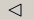 buttons. The and buttons will respectively jump to the last and first entry of the database.
The Animation wheel controls the speed of the animation. Moving the wheel to the right accelerates the animation rate. Moving the wheel all the way to the left stops the animation.
You can run a continuous animation loop by dragging the animation wheel right and selecting the Loop option. To stop the looping, click on the grey square to the right of the wheel.
The Sequence Editor is a tool for visualizing molecules in terms of their residues, and acts as a starting point for performing full sequence-to-structure reconstruction. This includes homology analysis as well as secondary structure analysis and prediction on proteins.
Clear the current molecular data with .
We will load a protein from the Protein Database panel (this panel might take a few seconds to load):
By default, the list orders proteins alphabetically according to the last three characters of their four-letter PDB codes. Find 2POR PORIN. A quick way of finding proteins is to use the Search field:
Enter 2POR in the Search text field. The list displays 2POR. Select this entry and press , check the "Center Molecule" box and click OK in the prompt to load it into MOE. Close the Protein Database panel.
To see the beta-barrel, turn on backbone ribbon drawing using the appropriate button in .
Open the Sequence Editor with .
Tip A shortcut to open the Sequence Editor is to use the keystrokes <Ctrl>-q.
The residues of the currently loaded molecular system are laid out linearly in a schematic diagram in the Sequence Editor. Protein structures may comprise one or more chains which are each composed of a linear succession of residues.
The Display menu in the Sequence Editor controls certain visual features:
Change from three-letter to single-letter residue display mode with .
Display secondary structure indicators with . The colored bars correspond to the backbone ribbon displayed in the MOE Window. Both are calculated dynamically.
Display backbone hydrogen bonds with . Bonds appear as arcs.
Some of the colors used in the Sequence Editor can be modified using the Configuration Options panel. Open the panel with and switch to the Sequence Editor page to modify the color of the displayed H-Bonds. Choose lightShadow and press Apply to put the change into effect. Close the options panel.
Note that this change will be saved in your private resource file when you quit MOE (for more information, see resource configuration file). Hence, if you do not like this color, reset the color to one you prefer in the Configuration Options.
Change the Sequence Editor residue colors:
SE | Display | Color Residues
Select Function to color residues according to function. Press Apply to see the changes.
Now color the atoms in the MOE Window by residue:
Various sequence-only properties can be measured and plotted in the Sequence Editor:
Measure and plot the solvent accessibility:
SE | Measure | Solvent Accessibility | Scalar1
Solvent accessibility is plotted for each residue. The Plot footer in the Sequence Editor contains a toggle box for Accessible Surface.
Hide the plot by turning off the Accessible Surface toggle located in the SE footer.
Measure and display predicted secondary structure:
SE | Measure | Predicted Secondary Structure
Three plots are generated, indicating the probability that each residue will or will not have a structure. The solvent accessibility plot is no longer available.
In addition, MOE provides several other plots that are displayed in the Protein Geometry application.
Tip You can locate which residues correspond to the data points in the plot panel by dragging a selection box around the points. This will select corresponding atoms in the MOE window. The corresponding residues in the Sequence Editor can be selected with .
To examine sidechain rotamer quality, select Rotamers in the Check menu of the Protein Geometry application.
The selection facilities of the Sequence Editor can be used to locate the atoms belonging to a given residue or the residues containing selected atoms. They can also be used to select residues of a specific structure or property, and residues conserved across an alignment.
Select a group of residues by dragging the left mouse button over residues in the Sequence Editor. This draws a selection box around the residues. All residues within this box will be selected. Now select a residue in the Sequence Editor by clicking on it with the left mouse button. This deselects all other residues.
Choose . In the MOE Window, the atoms of that residue will be added to the current atom selection set.
Clear the residue selection in the Sequence Editor by clicking the left mouse button within the residue area away from any residue. Select an atom in the MOE Window. Now use the command to find the residue containing that atom.
Select a residue by clicking in the horizontal ruler above the residues. The ruler indicates residue positions for alignment purposes. If several sequences are loaded in the Sequence Editor, clicking in the ruler will select all the residues (across chains) at that position or, in other words, within the column of residues.
Select the atoms of that residue by choosing in the Selected Residues popup. To activate the popup, click the mouse popup button in the residue drawing area of the Sequence Editor away from any residue.
There are also Chain, Selected Chain, Residue, and Residue Column popup menus.
This section covers two important homology operations: sequence alignment and superposition.
Choose to clear molecular data.
Open the Protein Alignment panel:
SE | Homology | Align
Press OK to perform the alignment using the default values.
Once the alignment is complete, MOE-Align will superpose the chains.
Note: For a more comprehensive view of the residues in the Sequence Editor, turn on (if previously turned off).
Next we will examine an alignment region by isolating the atoms of a selected range of residues.
To select all residues within columns 1 and 60: click the left mouse button in the ruler at position 1, then press Shift and click the left mouse button at position 60. This selects the range of residues.
Position the mouse cursor away from any selected residue and open the Selected Residues popup menu. Choose . Only the atoms of the selected residues now appear in the MOE Window.
In the MOE Window, hide the side chains by choosing and the hide the ribbon display by choosing . This gives you a better view of the backbone atoms.
To fine tune the alignment, you can move residues directly in the Sequence Editor. The movement is performed by clicking and dragging the middle mouse button on the residue to move. Try dragging a residue now.
To move a group of residues, select the residues and press Alt while dragging the middle mouse button. In this case, all selected residues are moved.
Note that a residue cannot be moved left of position 1.
Finally, you can clear the alignment (all chains will be reset to start at position 1):
Here we will load five protein-ligand complexes into MOE and superpose them using the Superpose application. Remove any molecules you have loaded in MOE by choosing . The first step will be to load and prepare five co-crystal CDK2 complexes in MOE.
Use ctrl-click to select PDB files 1g5s.pdb, 1gih.pdb, 1gij.pdb, 1ke8.pdb, 1ke9.pdb from $MOE/sample/mol/.
Click Load PDB File and click Yes when prompted, then press OK to load the five PDB files into MOE.
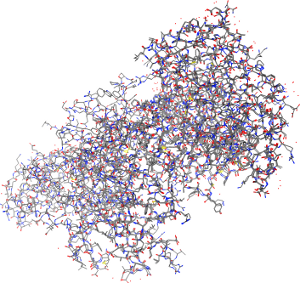
Begin customizing the view by isolating the ligands and rendering the protein backbones.
Set the ribbon color to Chain color. Each protein will be colored the same color as its chain number in the SE.
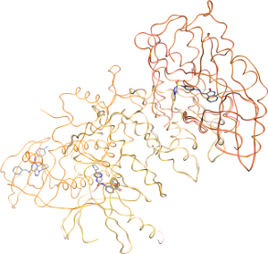
Click the SE button to open the Sequence Editor and view the protein sequence information. Next, we will align the protein sequences and superpose the complexes. For this, open the Superpose menu.
In the Superpose set Atom Sets to Main and Options to Pocket Residues, then click Superpose.
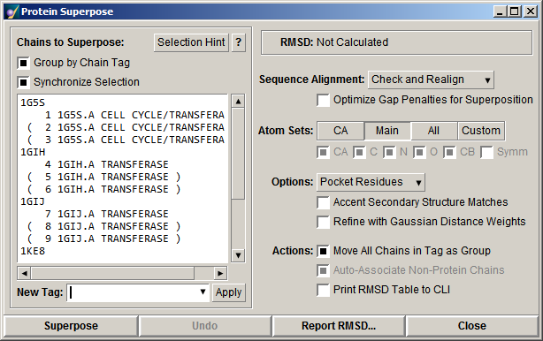
Click Yes when prompted to align the protein sequences. The sequence alignment and superposition will be performed. During superposition, chains having the same tag will not move in relation to each other. This way, the protein ligand complexes will be aligned. Click Report RMSD in the Superpose panel and have a look at the resulting plot.
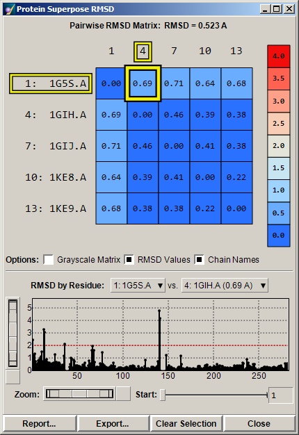
Highlighted in yellow you can see the RMSD between chain 1 and chain 4. The RMSD values for the other superposed chains are shown in the color plot. Click Close in the Protein Superpose panel to close both that panel and the RMSD matrix.
We will now visualise the active site. Click to view the aligned active sites. Now choose to launch a 2D display of the interactions between each ligand and its receptor. Use the up and down arrows in the Ligand Interactions panel to browse through the five complexes, and click Isolate in the to view a particular complex in the main MOE window.
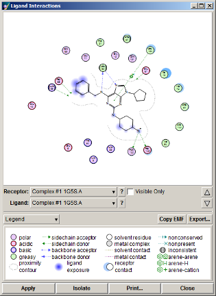
The System panel can be used to control visibility, selection state and rendering of molecules in MOE. Click to raise the panel; you will see a list of the chain tags in the current system. Click on the + button next to 1G5S to expand that chain tag group; this allows control over the receptor, solvent and ligand molecules within that tag group. Hold the mouse over the various buttons to read about the other functions available from this panel.